Fertilization & Infertility
- Fertilization happens in the ampulla. Sperm reach the tube within 5 minutes, must capacitate there first, and the egg is only viable for 12–24 hours. Sperm survive up to 5 days but fertilize best for 2–3.
- Infertility = no pregnancy after 1 year of regular unprotected intercourse. It affects 10–15% of couples. 85% conceive by 1 year, 93% by 2.
- Work up at 1 year if under 35, at 6 months if 35 or older, and right away if you already know there's a problem (e.g. PCOS with irregular cycles — they won't conceive without ovulating).
- Infertility is 50% female and 50% male (female 41%, male 24%, both 24%, unexplained 11%), so always investigate both partners. A semen analysis is cheap and comes first.
- The standard work-up: day 2–4 bloods (FSH, LH, estradiol, prolactin, TSH — always together), a sonohysterogram on days 6–12 for the cavity and tubes, day 21 progesterone to prove ovulation, a semen analysis, infectious disease screening, and AMH (which measures egg reserve, not natural fertility).
Learning Objectives
- Explain how fertilization occurs.
- Describe the optimal time for intercourse to achieve a pregnancy.
- Outline an approach to infertility for a family physician.
- Outline general causes of infertility, including prevalence.
- Describe an approach to a sensitive assessment of fertility concerns.
- Describe populations who require early referral for fertility concerns.
- Outline how pelvic infection or pain affects fertility.
Dr. Krista Cameron's module. It's built as reading and interactive activities rather than a recorded talk, so these notes follow the module itself. The cycle it rests on is in 3.3, and PMOS has its own page at 3.10.
Fertilization
Sperm transport, capacitation, egg pick-up, and the sequence from binding to a diploid zygote.
Sperm Transport
![Diagram of a spermatozoon labelling the mitochondria, equatorial segment, outer acrosomal membrane, inner acrosomal membrane, nucleus and plasma membrane, with text: the lifespan of a sperm is approximately 72 days from the initiation of spermatogenesis to its arrival at the caudal tip of the epididymis before ejaculation; the sperm head contains a membrane-bound nucleus capped by the acrosome, a large vesicle filled with proteolytic enzymes; during ejaculation active sperm rapidly enter the uterus while the seminal plasma remains in the vagina.](../../../../assets/images/week-4/fertilization-infertility/sperm-anatomy.jpg) 72 days from the start of spermatogenesis to the tail of the epididymis. The head is a nucleus capped by the acrosome, a bag of proteolytic enzymes it will need to get through the zona.
72 days from the start of spermatogenesis to the tail of the epididymis. The head is a nucleus capped by the acrosome, a bag of proteolytic enzymes it will need to get through the zona.
![Graph of number of sperm in millions against time in minutes, falling steeply from 300 million at ejaculation to very low numbers by the cervical mucus and the fallopian tube within about 5 minutes, followed by text on capacitation: the cellular molecular changes that ejaculated spermatozoa must undergo in order to fertilize, taking place in the fallopian tube and involving gaining the ability to bind the zona pellucida, developing the capacity to undergo the acrosome reaction, and acquiring hypermobility.](../../../../assets/images/week-4/fertilization-infertility/sperm-transport-speed.jpg) Sperm reach the tube within about 5 minutes. Note how few of the 300 million make it. Capacitation then happens in the tube.
Sperm reach the tube within about 5 minutes. Note how few of the 300 million make it. Capacitation then happens in the tube.
| Step | What happens |
|---|---|
| Ejaculation | Active sperm rapidly enter the uterus; the seminal plasma stays in the vagina. Contractions of the female tract help sperm into the cervical mucus |
| Transport | Sperm can be at the site of fertilization within 5 minutes |
| Capacitation (in the tube) | Three changes: ability to bind the zona pellucida · capacity to undergo the acrosome reaction · hypermobility |
"It all fell out when I stood up." That is seminal fluid. The sperm are already gone from the vagina and into the uterus.
"Should I lie down for 30 minutes after?" No. Sperm reach the fallopian tube within about five minutes.
Egg Pick-Up and Fertilization
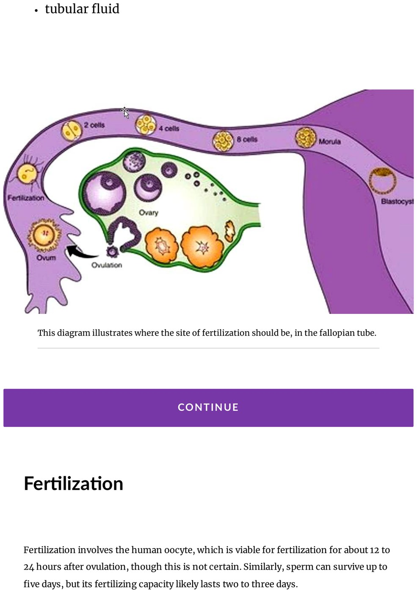
Pick-up. The egg and its cumulus mass stick to the ovary's surface and the fimbriae sweep over and collect it. Transport then needs ciliary motion, muscular contractions and tubal fluid. Variations happen: an ectopic pregnancy, or one tube retrieving an egg from the opposite ovary.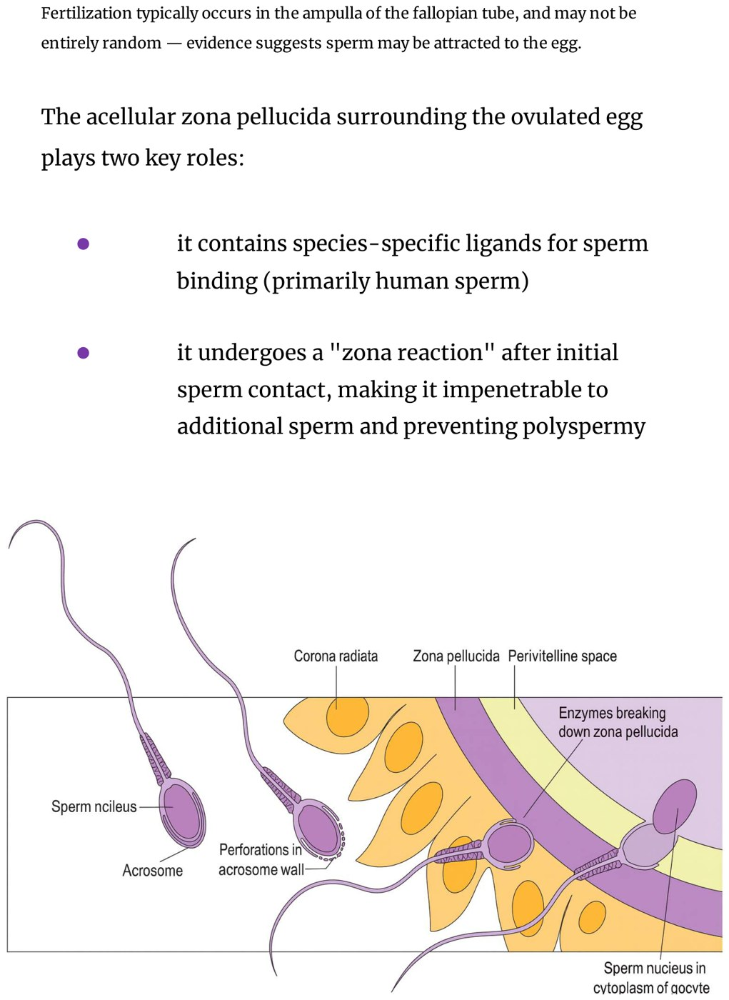
The zona pellucida does two jobs: it carries species-specific ligands for sperm binding, and after the first sperm makes contact it undergoes the zona reaction, becoming impenetrable and preventing polyspermy.- The oocyte is viable for about 12–24 hours after ovulation.
- Sperm survive up to 5 days, but their fertilizing capacity probably lasts 2–3 days.
- Fertilization happens in the ampulla, and may not be entirely random: there is evidence sperm are attracted to the egg.
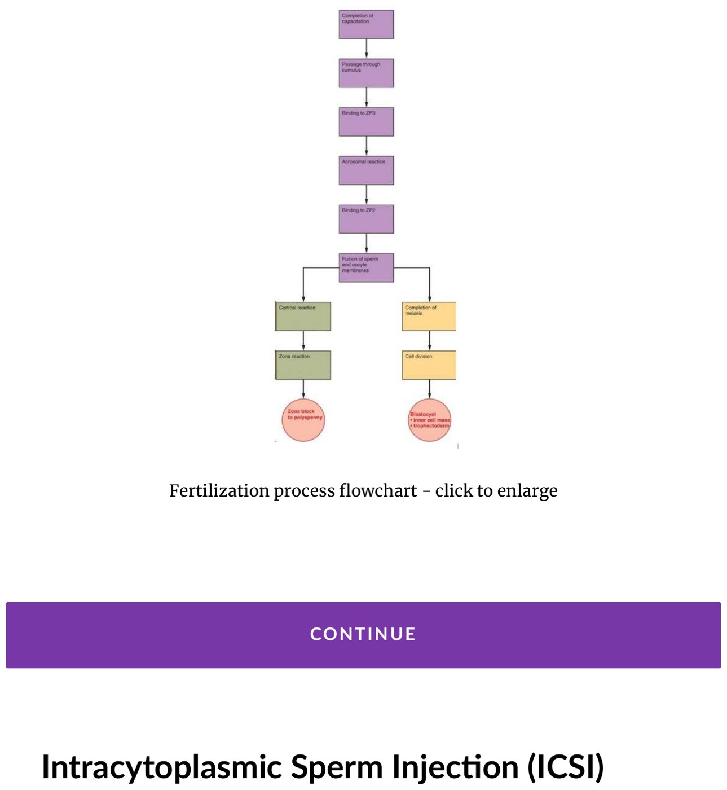
Infertility: The Basics
Definitions, who to work up and when, and what age does to the numbers.
Definitions and Numbers
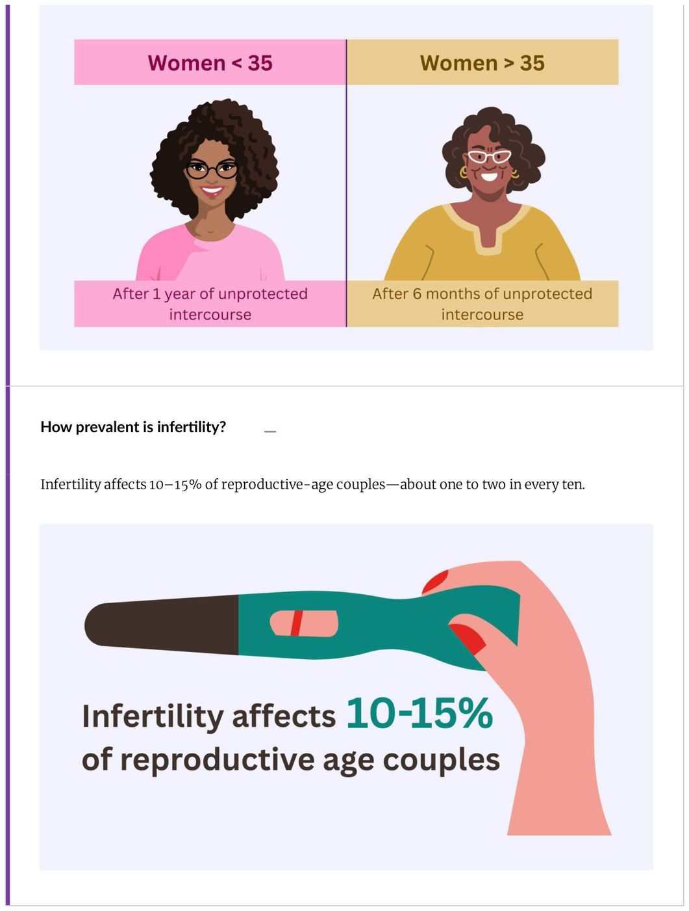
When to assess, and how common it is. <35: after 1 year. ≥35: after 6 months. Infertility affects 10–15% of couples, about 1–2 in every 10.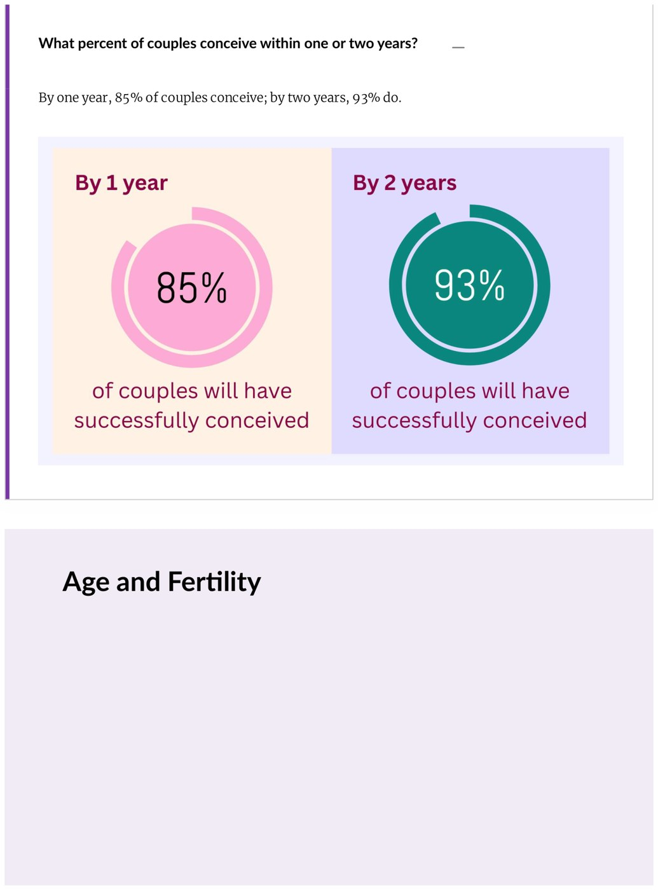
Most couples conceive. 85% by one year, 93% by two. This is the number that frames the whole conversation.| Question | Answer |
|---|---|
| What is infertility? | Regular, unprotected intercourse for a year without pregnancy. Frequency matters: if partners are apart for long stretches, or can't time intercourse around ovulation, the one-year rule means less |
| Primary vs secondary? | Primary: she has never been pregnant. Secondary: she has had a previous pregnancy (not necessarily a live birth). A partner's children from another relationship don't change it — that's still primary |
| Who gets worked up early? | ≥35 → after 6 months (egg quantity and quality decline). Known problems → immediately: e.g. irregular cycles from PCOS, because without ovulation they won't conceive |
Age
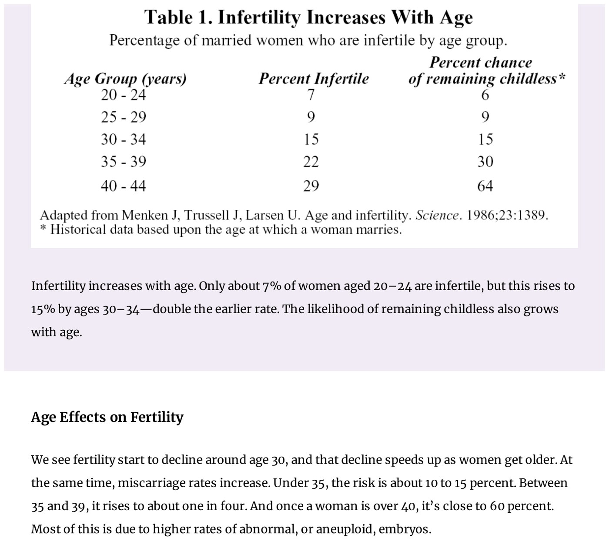
Infertility roughly doubles from the early 20s to the early 30s: 7% at 20–24 vs 15% at 30–34, and the chance of remaining childless climbs steeply after 35.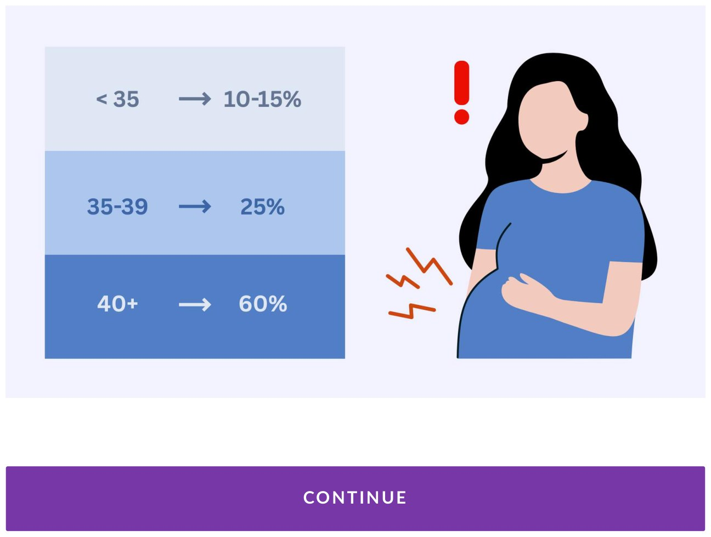
Miscarriage risk by age: 10–15% under 35, about 1 in 4 at 35–39, and close to 60% over 40 — mostly from aneuploid embryos.Fertility starts to decline around 30 and the decline accelerates. Both curves — falling fertility and rising miscarriage — are driven by the same thing: the age of the eggs.
The Work-Up
Six tests, each timed to a specific point in the cycle for a specific reason.
The Standard Infertility Work-Up
| Test | When | What it answers |
|---|---|---|
| Blood work | Days 2–4 (day 1 = first day of bleeding) | FSH, LH, estradiol, prolactin, TSH. Is the brain signalling the ovaries properly? Is prolactin or thyroid the problem? |
| Sonohysterogram (+ ExEm foam) | Days 6–12: lining is thin after the period, and there's no pregnancy yet | Saline opens the cavity to look for polyps and fibroids; the foam shows whether the tubes are open; the ovaries are checked and follicles counted for egg reserve |
| Day 21 progesterone | About a week before the expected period | Did she actually ovulate? After ovulation the follicle becomes the corpus luteum and makes progesterone. Even regular cycles aren't always ovulatory |
| Semen analysis | Any time | The male half — see below |
| Infectious disease screening | Both partners | Required by law in Ontario before using assisted reproductive technology. Best done at the fertility clinic: family doctors often miss tests like HTLV-1 and -2 |
| AMH | Any time in the cycle | Egg reserve, not natural fertility |
On day 2–4 everything should be low. If estradiol comes back at 500, that's far too high for early cycle: a dominant follicle is already growing, so the patient isn't where you think she is in her cycle.
That matters because an FSH of 30 alone looks like diminished ovarian reserve or premature ovarian insufficiency. But if estradiol is also 500, the sample simply wasn't taken at the start of the cycle, and that FSH may be completely normal. LH is checked because it should be low at baseline; in PCOS it can already be high (up to about 18), which is why home ovulation strips are so hard to interpret in PCOS. Progesterone isn't part of day-3 bloods, unless the cycle phase is unknown or an ultrasound shows a complex cyst that might be a corpus luteum.
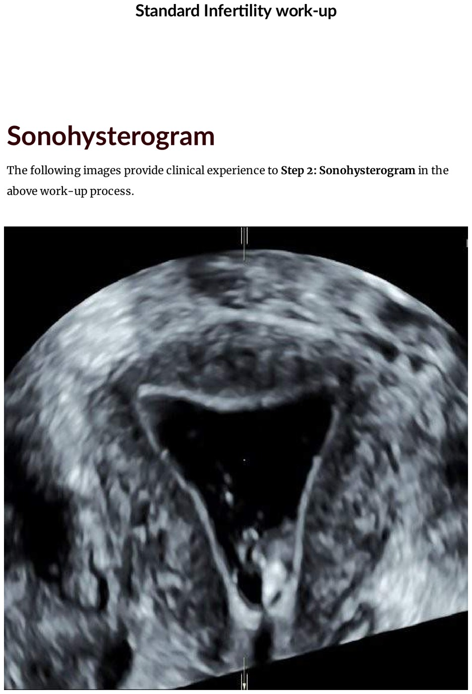
Normal sonohysterogram. The dark oval is the cavity, opened with saline so its shape can be seen.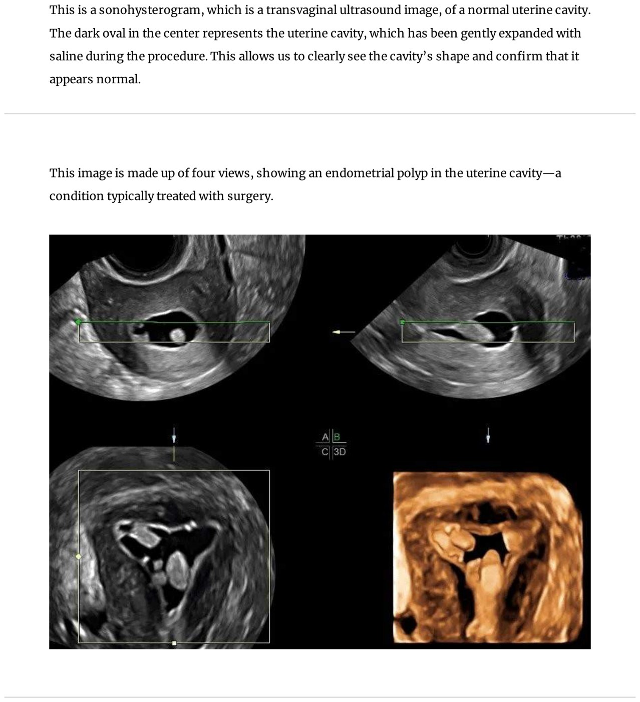
An endometrial polyp in the cavity — typically treated surgically.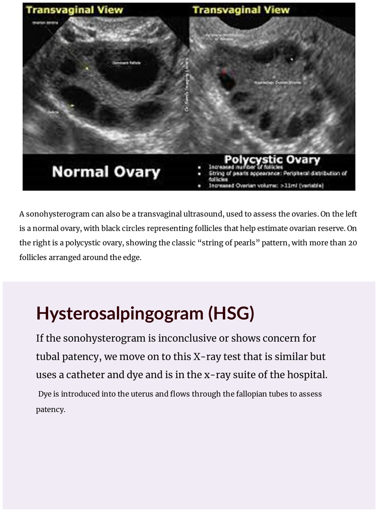
Normal ovary vs polycystic ovary. Black circles are follicles (the antral count estimates reserve). On the right, the classic "string of pearls": more than 20 follicles around the edge.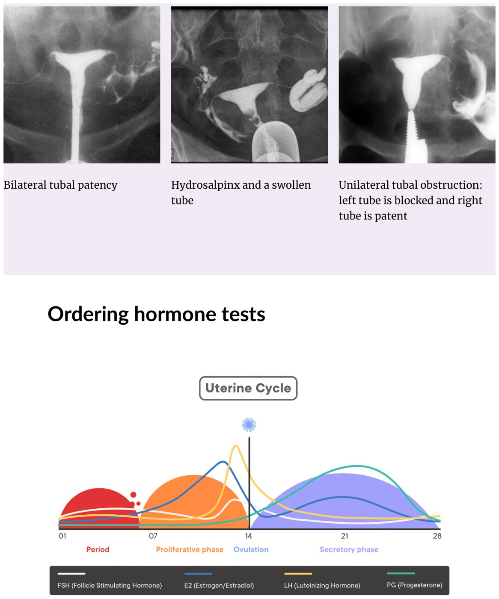
HSG when the sonohysterogram is inconclusive: dye and X-ray. Left to right: both tubes patent, a hydrosalpinx, and one blocked tube. Below it, the cycle graph that explains the timing of every test above.Confirming Ovulation, and Timing Intercourse
| Method | How it works | Practical? |
|---|---|---|
| Mid-luteal progesterone | About 7 days before the expected period; a high level means ovulation happened | Yes — the standard |
| LH urine strips | Two lines always appear; a true surge is when both lines are equally dark. Ovulation follows in about 36 hours | Yes, and the surge day is the best day for intercourse |
| Ultrasound monitoring | A mature follicle, its collapse, free fluid, then a corpus luteum | Accurate but needs daily scans |
| Cervical mucus | Two consecutive days of clear, stretchy mucus | Varies a lot between people |
| Basal body temperature | A rise after ovulation | Hard to measure and track accurately |
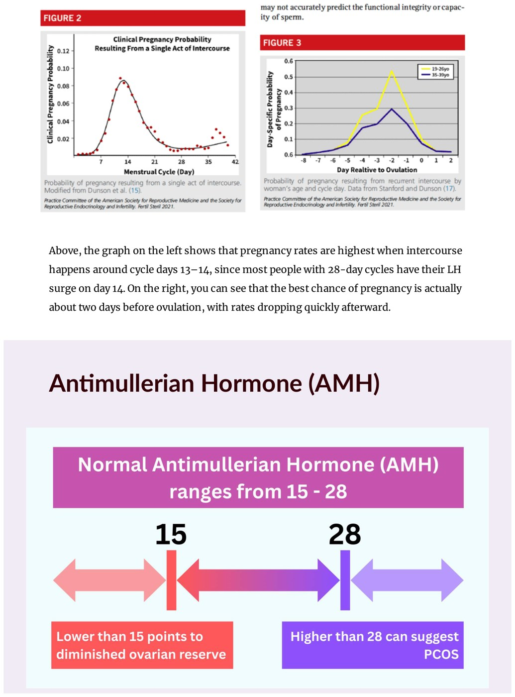
What AMH does and doesn't tell you. It's made by granulosa cells of small follicles that aren't yet FSH-responsive, so it measures reserve. It does not predict natural fertility, even though patients panic about a low number. Its real use is guiding medication doses for IVF or egg-freezing.
When Is a Cycle Actually Irregular?
It depends on how long it's been since menarche.
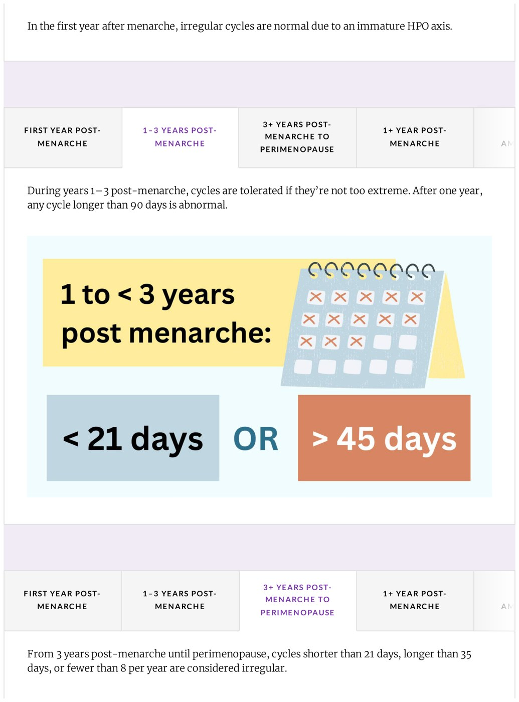
1–3 years post-menarche: abnormal if <21 or >45 days.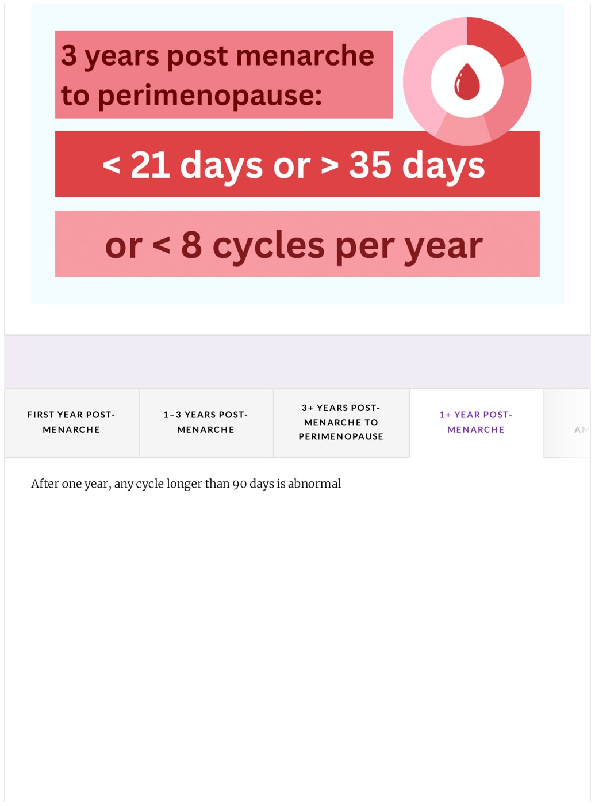
3 years to perimenopause: abnormal if <21 days, >35 days, or fewer than 8 cycles a year.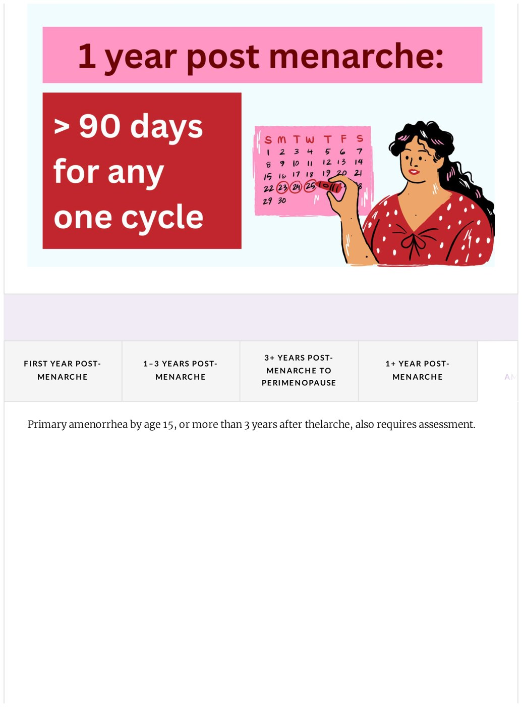
After the first year, any cycle over 90 days is abnormal.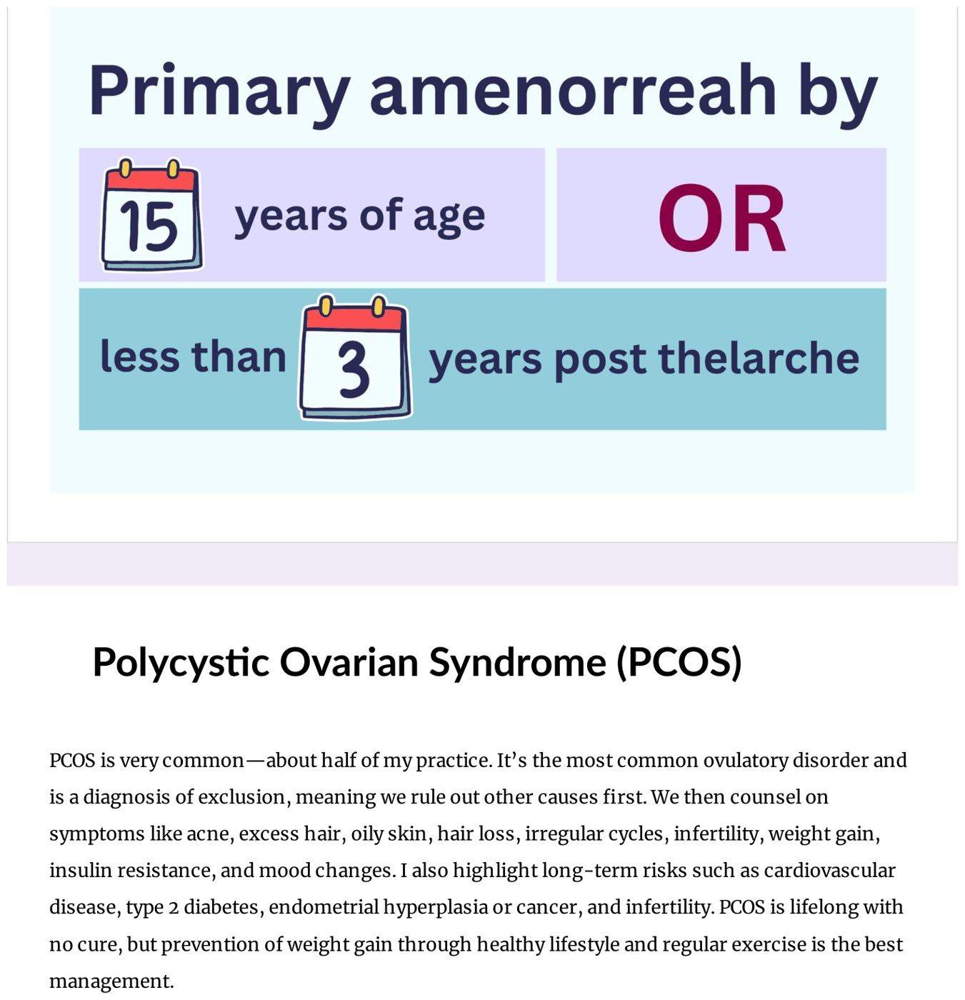
Primary amenorrhea: no period by 15, or more than 3 years after thelarche, needs assessment (see 3.4).In the first year after menarche, irregular cycles are normal: the HPO axis is still immature.
The Causes
Ovulatory, tubal/peritoneal and male. Half of it is male factor.
PCOS: The Commonest Ovulatory Disorder
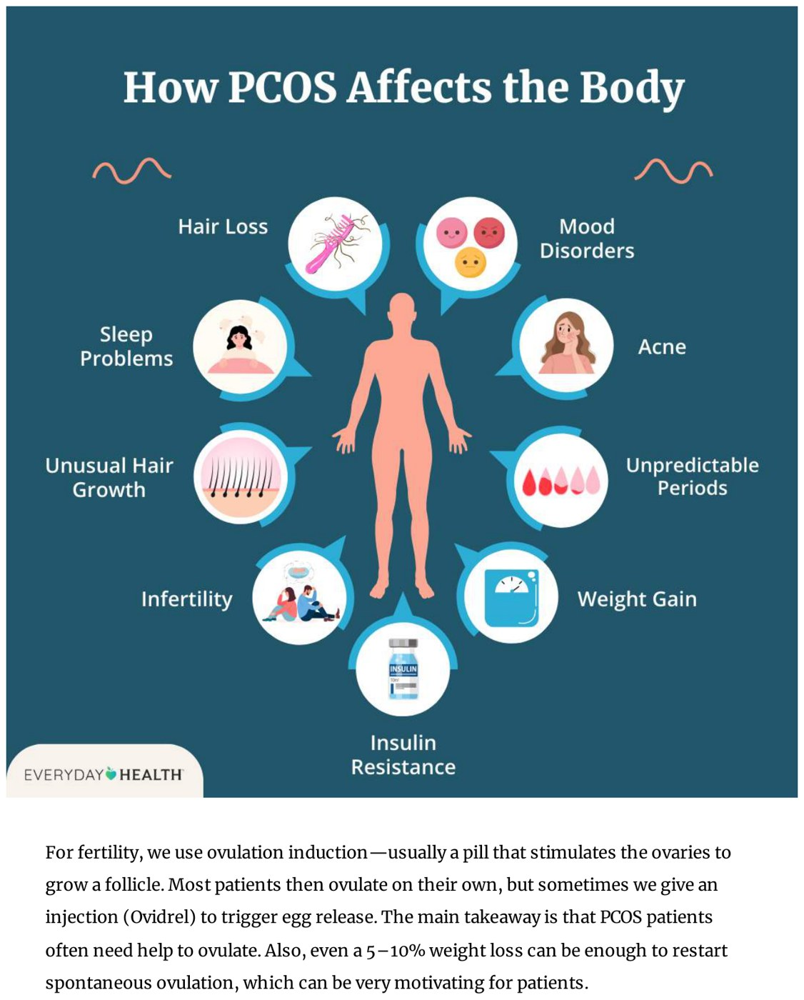
About half of this fertility practice. It is a diagnosis of exclusion, lifelong, with no cure.- Counsel on the symptoms: acne, excess hair, oily skin, hair loss, irregular cycles, infertility, weight gain, insulin resistance, mood changes.
- And the long-term risks: cardiovascular disease, type 2 diabetes, endometrial hyperplasia or cancer, and infertility.
- Best management is preventing weight gain through lifestyle and regular exercise.
- For fertility: ovulation induction, usually a pill that grows a follicle, sometimes with an injection (Ovidrel) to trigger release. The point is that PCOS patients usually need help to ovulate.
- A 5–10% weight loss can restart spontaneous ovulation — a genuinely motivating number for patients.
The full diagnostic work-up, including the mimics, is 3.10 PMOS.
Endometriosis
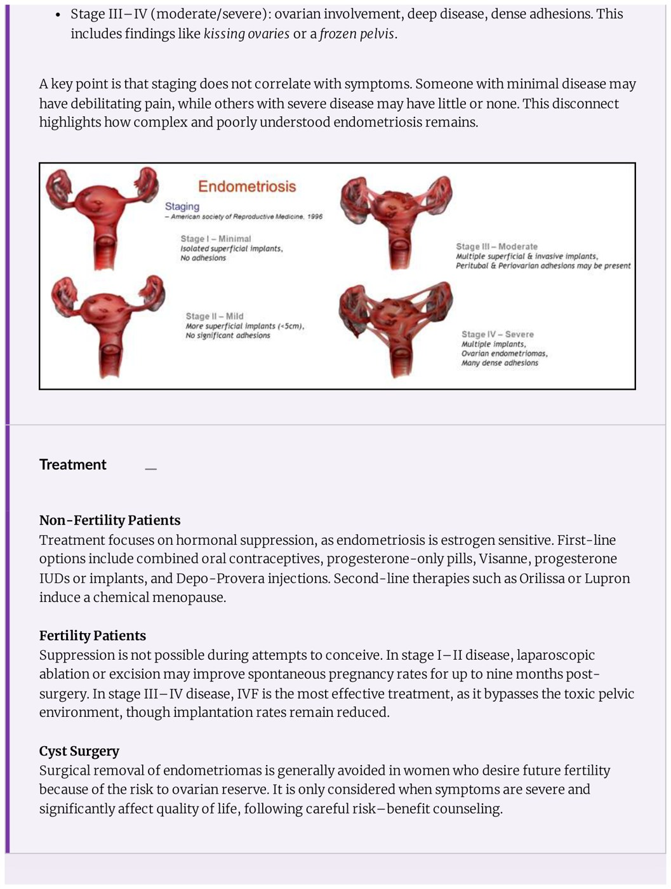
Revised ASRM staging. For fertility, group it: I–II (minimal/mild) = superficial plaques, no significant adhesions. III–IV (moderate/severe) = ovarian involvement, deep disease, dense adhesions ("kissing ovaries", a "frozen pelvis").- Affects 30–50% of infertile women (with better imaging, this clinic suspects closer to 80%).
- Gold standard: laparoscopy with biopsy. In practice most diagnoses are made on symptoms and response to treatment (combined pill or a progestin such as Visanne). Advanced ultrasound with pelvic mapping is increasingly useful.
- Staging does not correlate with symptoms. Minimal disease can be debilitating; severe disease can be silent.
| Theory | Idea |
|---|---|
| Sampson's retrograde menstruation | The most cited: menstrual tissue flows backwards through the tubes |
| Embryonic rest | Misplaced embryonic Müllerian duct cells proliferate in the abdomen |
| Coelomic metaplasia | Peritoneal cells, embryologically similar to endometrium, transform into it |
| Halban's | Lymphatic and vascular spread (lesions are found even in brain and lung) |
No single theory explains it; most researchers favour a multifactorial model: retrograde menstruation plus immune dysfunction, genetic susceptibility and environmental factors.
Toxic fluid: the peritoneal fluid contains embryotoxic factors. Poor implantation: implantation rates are lower. Impaired follicles: ovarian reserve is often diminished and the eggs retrieved behave worse. Tubal transport: the pelvis sits in a chronic pro-inflammatory state that extends into the tubes, so sperm and egg have a harder time meeting. Add them up and you see why it fills the infertility clinic.
| Treating it | Approach |
|---|---|
| Not trying to conceive | Hormonal suppression (it's estrogen-sensitive): combined pill, progestin-only pill, Visanne, progesterone IUD or implant, Depo-Provera. Second line: Orilissa or Lupron, which induce a chemical menopause |
| Trying to conceive, stage I–II | Suppression isn't possible. Laparoscopic ablation or excision may improve spontaneous pregnancy rates for up to 9 months after surgery |
| Trying to conceive, stage III–IV | IVF, which bypasses the toxic pelvic environment (implantation rates are still reduced) |
| Endometriomas | Avoid surgery in anyone wanting future fertility: it costs ovarian reserve. Operate only for severe symptoms, after careful risk–benefit counselling |
Male Factor: Half of It
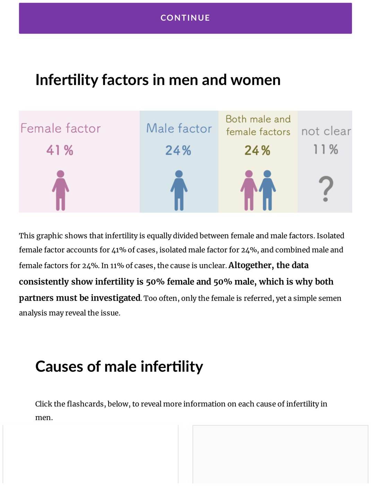
Female 41% · male 24% · both 24% · unexplained 11%. Altogether that is 50% female and 50% male, which is why both partners must be investigated. Too often only the woman is referred, when a simple semen analysis would have found it.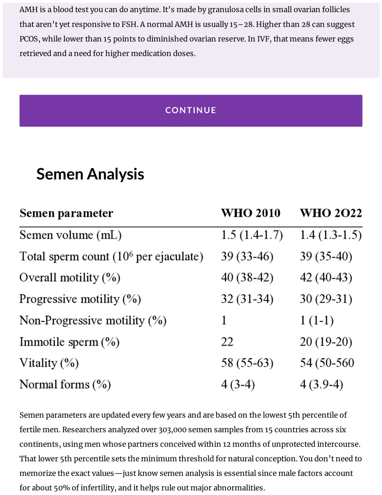
WHO reference values come from the lowest 5th percentile of fertile men (over 303,000 samples, 15 countries, partners who conceived within 12 months). Don't memorize the numbers — know that the test is essential.| Cause | Detail |
|---|---|
| Idiopathic | The most common: no clear explanation |
| Varicocele | Second most common: enlarged scrotal veins impairing sperm production and quality |
| Exogenous steroids | Common in men using anabolic steroids. Testosterone acts as a male contraceptive: it suppresses the brain's drive, so spermatogenesis stops. Result: zero sperm on analysis |
| Erectile / ejaculatory dysfunction | Often linked to cardiovascular disease or hypertension. Ask about sexual function |
| Infections | Past genital infections can obstruct the tract |
| Genetic | Klinefelter syndrome, Y chromosome microdeletions |
| Radiation and chemotherapy | Damage testicular tissue |
| Lifestyle | Marijuana, smoking, hot tubs |
Male aging matters less than female aging, but it isn't nothing: semen volume, motility and morphology decline while concentration stays stable, and there are more new autosomal dominant mutations and higher rates of schizophrenia and autism in offspring. Male age is not associated with aneuploidy or sex chromosome abnormalities.
Recurrent Pregnancy Loss
Two or more losses — consecutive or not, including biochemical pregnancies. Two losses is enough to warrant a work-up. Fewer than 5% of couples have two consecutive losses, and fewer than 1% have three or more.
| Cause | Share | What to do |
|---|---|---|
| Antiphospholipid antibody syndrome | 5–20% | Diagnosed by three specific antibodies. If criteria are met, treat with heparin and aspirin from the first positive pregnancy test. This reduces loss, which is why ruling it in or out matters |
| Uterine anomalies | 10–15% | Septate, unicornuate or bicornuate uterus, or intrauterine polyps (see 3.7) |
| Endocrine | — | Thyroid dysfunction, hyperprolactinemia, poorly controlled diabetes |
| Chronic endometritis | — | A low-grade infection of the cavity; two weeks of antibiotics improves outcomes |
| Genetic | ~5% of couples | A balanced reciprocal translocation in one partner produces unbalanced embryos, so karyotype both partners |
The work-up: endocrine bloodwork, ultrasound of the cavity (usually sonohysterogram), karyotypes of both partners, and an endometrial biopsy. Even so, about 50% have no identifiable cause, which is frustrating for everyone.
Built from Dr. Krista Cameron's "Fertilization and Infertility" module: its lesson text, interactive activities and figures, plus the module's own PDF, which is where all the images here come from. This module is written and interactive rather than lectured, so there is no recording to cross-check against; where the module gives clinic-specific practice (like the local endometriosis rate or AMH ranges), that's flagged as the module's own. Related pages: 3.10 PMOS for the full PCOS work-up, 3.7 for uterine anomalies, and 4.3 for the other side of the same coin.